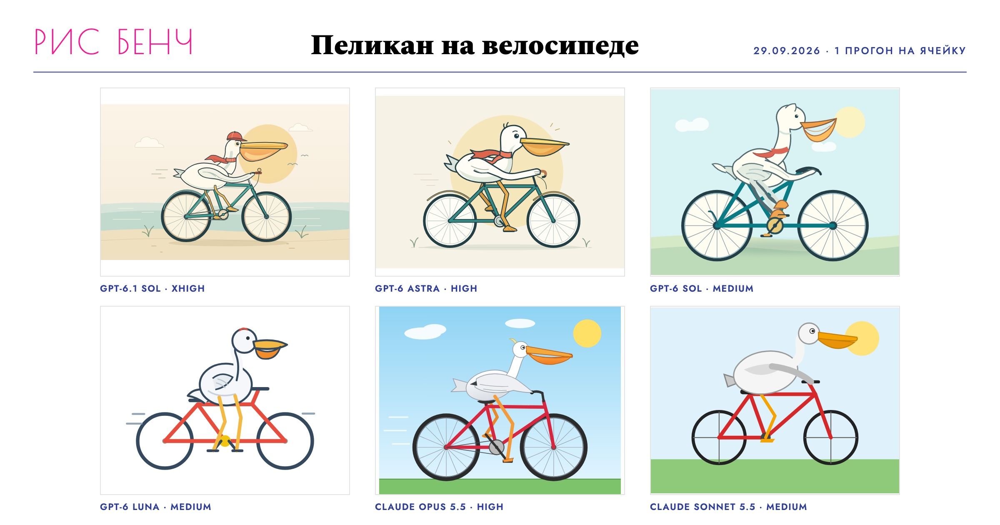
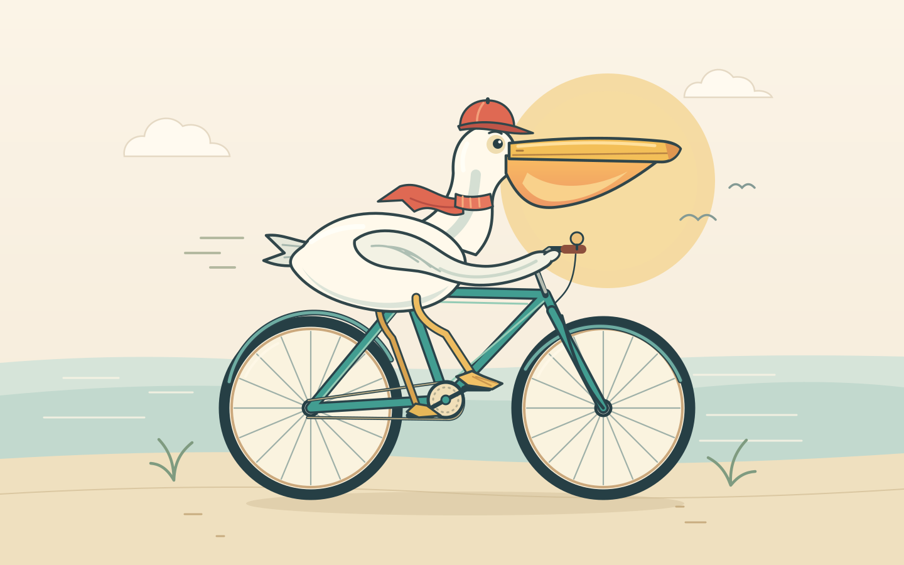
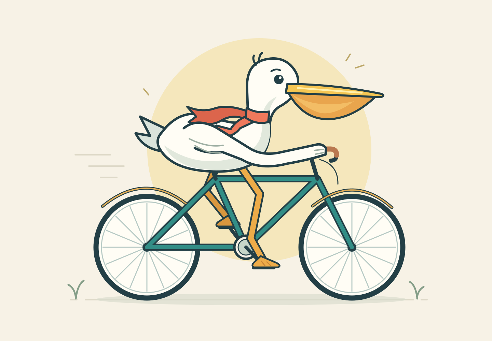
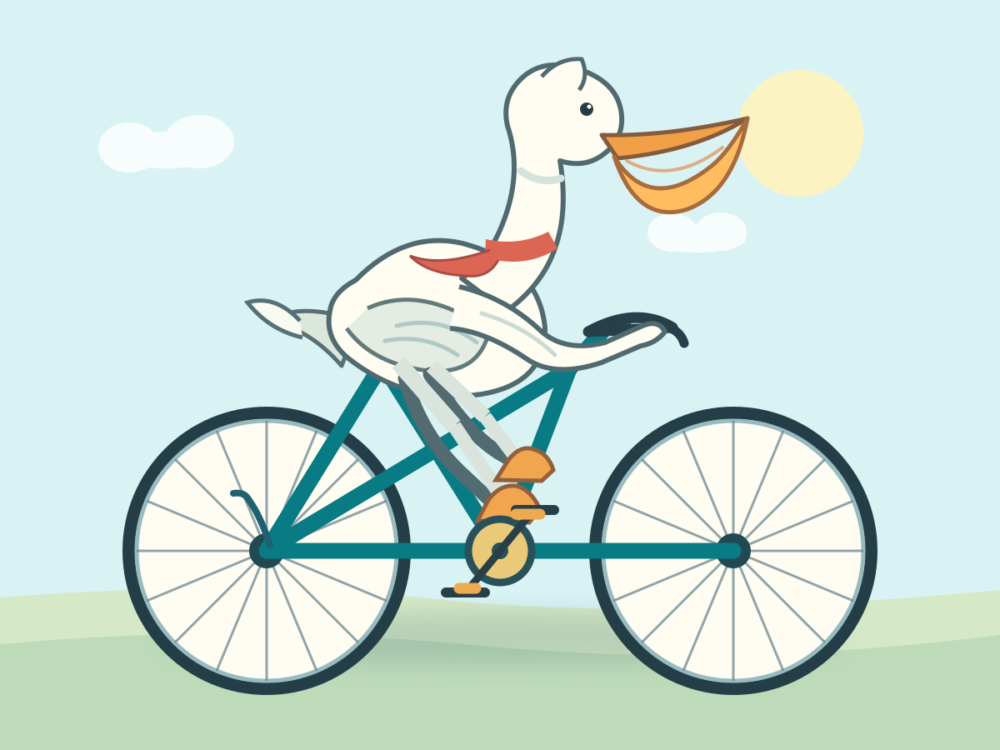
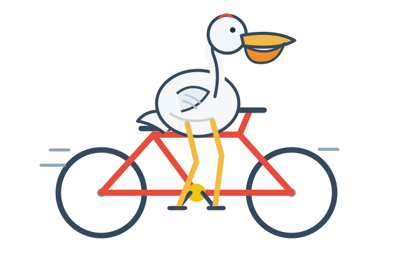
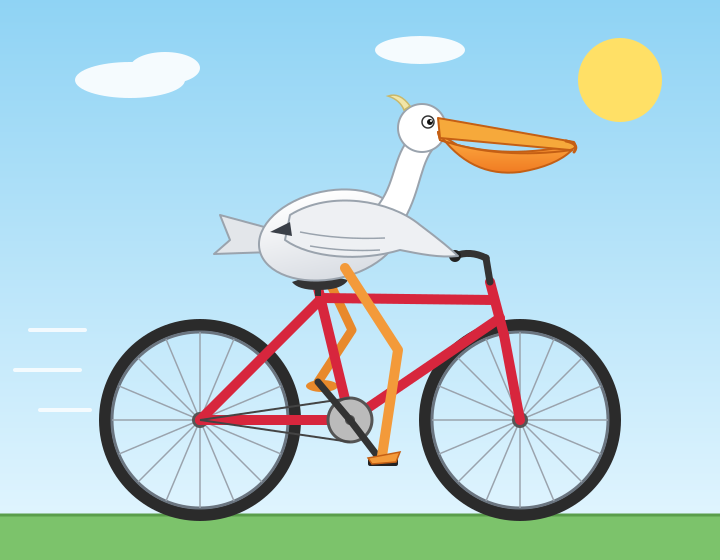
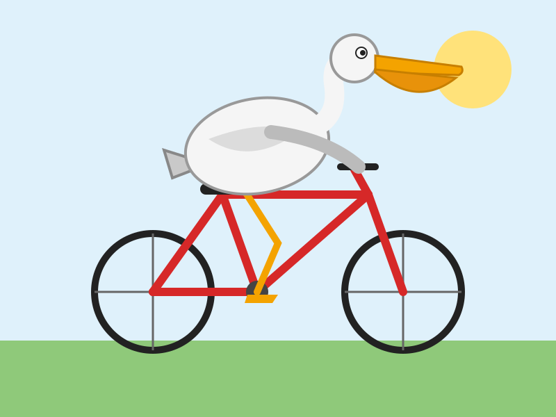
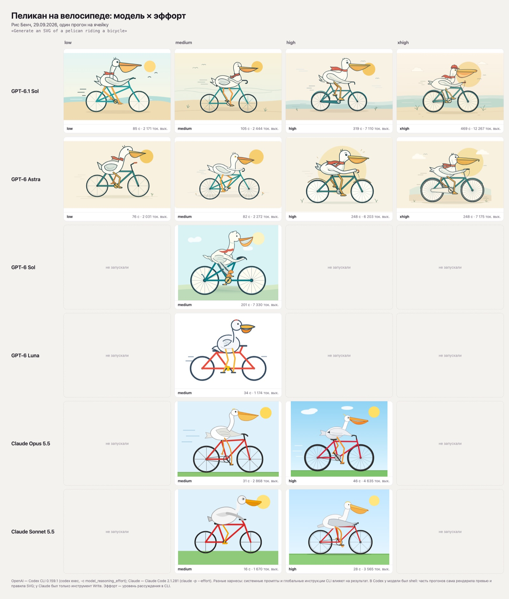

29 сентября OpenAI провела DevDay и выпустила GPT-6.1 Sol. Компания говорит, что модель почти догоняет GPT-6 Astra за пятую часть цены. Проверять это на серьёзных задачах долго, а на пеликане быстро. В тот же вечер я дал агенту одну строку и прогнал её по шести моделям в Codex CLI и Claude Code, на всех доступных уровнях эффорта.
Получилось 28 картинок: 14 статичных и 14 анимированных. Здесь сетка, несколько ячеек крупно, время и токены на каждую, оговорки и команды, чтобы повторить у себя. Выводов вида «модель X лучше» не будет: на ячейку один прогон, из одного прогона такой вывод не сделать.
Шесть пеликанов
По одной статичной ячейке от каждой модели. Это исходные SVG, которые написали модели:






Что видно в статике на глаз:
- Красный шарф. Он есть у всех статичных пеликанов OpenAI, кроме Luna. Уиллисон тоже заметил, что Astra упорно повязывает пеликану красный шейный платок. У Claude шарфа нет ни в одной ячейке.
- Палитра держится внутри семейства. У GPT-6.1 Sol и Astra бирюзовая рама и бежевый фон. У всех четырёх ячеек Claude голубое небо, зелёная трава и красная рама.
- Эффорт меняет детали, а не сцену. У GPT-6.1 Sol на всех уровнях одна и та же сцена: пляж, солнце, шарф. На xhigh добавились облака и кепка.
А теперь анимированный
Тот же промпт с одним словом «animated». Здесь разница заметнее: часть моделей сделала не просто картинку, а маленький постер с заголовком. Сначала вся сетка, 14 ячеек:
И каждая ячейка отдельно:
- Надписи. В 8 из 10 анимированных ячеек OpenAI модель добавила текст: заголовок, подзаголовок, подпись внизу. В четырёх ячейках Claude текста нет. В статике текста нет ни у кого.
- Одно имя на троих. «Pelican Pedal Club» написано в трёх ячейках: GPT-6 Astra на low и xhigh и GPT-6.1 Sol на xhigh.
- Размер файла растёт с эффортом. У GPT-6 Astra анимированный SVG весит 6 КБ на low и 35 КБ на xhigh, у GPT-6.1 Sol 5 КБ и 22 КБ.
Все 28 ячеек с исходными SVG лежат на Рис Бенче: статика и анимация.
Что за тест
Тест придумал Саймон Уиллисон, автор Datasette и блога про LLM. С октября 2024 года он даёт каждой новой модели одну и ту же строку:
Generate an SVG of a pelican riding a bicycle
промпт Саймона Уиллисона, github.com/simonw/pelican-bicycleРезультаты он складывает под тегом pelican-riding-a-bicycle, там уже 142 записи. 22 сентября он выложил сетку GPT-6 Astra, Sol и Luna по уровням эффорта, и наша сетка устроена так же.
Почему тест работает, хотя выглядит шуткой:
- SVG это код. Модель не рисует картинку, а пишет координаты кругов и кривых и не видит результат, пока его кто-нибудь не отрендерит.
- Велосипед трудно нарисовать даже человеку. Рама, цепь, педали, колёса должны стоять на своих местах, а у моделей они часто разъезжаются.
- Пеликаны не ездят на велосипедах. Готового образца в обучающих данных почти нет, модели приходится собирать сцену самой: куда деть лапы, крылья и огромный клюв.
- Это быстро и смешно. Одна строка, минута ожидания, и сразу видно, где модель поплыла. Годится как быстрая проверка перед серьёзными тестами.
На вопрос, не натаскивают ли лаборатории модели на пеликанов, Уиллисон ответил отдельным постом. Их бы поймали: если модель вдруг нарисует отличного пеликана, он проверит её на других зверях и другом транспорте, и разница будет видна сразу. А в шутку добавил, что это его долгая игра: пусть лаборатории схитрят, лишь бы у него наконец появился хороший пеликан.
Как мы гоняли
Промпт Уиллисона брали дословно. Для анимации добавили одно слово: «Generate an animated SVG of a pelican riding a bicycle». Каждую ячейку запускали один раз в пустой папке и брали то, что вышло, без повторов и отбора лучшего.
- Эффорт
- Уровень рассуждения, который задаётся в CLI: low, medium, high, xhigh. Чем выше, тем дольше модель думает перед ответом.
- Харнес
- Обвязка вокруг модели: CLI, системный промпт, доступные инструменты. Одна и та же модель в разных харнесах ведёт себя по-разному.
- Ячейка
- Одна комбинация модели, эффорта и промпта. Один прогон, одна картинка.
- OpenAI через Codex CLI 0.159.1.
codex exec -m <модель> -c model_reasoning_effort=<эффорт> -s workspace-write. У меня стоял Codex CLI 0.153.0, и он на gpt-6.1-sol отвечал ошибкой 400 «not supported when using Codex with a ChatGPT account». На 0.159.1 модель доступна. - Anthropic через Claude Code 2.1.281.
claude -p --model <модель> --effort <эффорт>, из инструментов только Write, MCP-серверы отключены. CLI поддерживает эффорт от low до max, для сравнения взяли medium и high. - Матрица. GPT-6.1 Sol и GPT-6 Astra на low, medium, high и xhigh. GPT-6 Sol и GPT-6 Luna только на medium. Claude Opus 5.5 и Claude Sonnet 5.5 на medium и high. Оба промпта, 28 прогонов, SVG получили во всех 28.
- Рендер. Headless Chromium через Playwright: каждый SVG открывается как документ, анимации записаны с экрана по 4 секунды на ячейку. Время считали от запуска CLI до выхода, токены взяли из отчёта CLI (output tokens).
Время и токены
Время считали по часам от запуска CLI до выхода, в секундах. Токены это выходные токены из отчёта CLI, вместе с рассуждением. Все 28 прогонов вместе заняли 81 минуту и 175 тысяч выходных токенов.
| Модель | Эффорт | Статика, с | токены | Анимация, с | токены |
|---|---|---|---|---|---|
| GPT-6.1 Sol | low | 85 | 2 171 | 95 | 2 496 |
| medium | 105 | 2 444 | 222 | 5 340 | |
| high | 319 | 7 110 | 272 | 7 383 | |
| xhigh | 469 | 12 267 | 749 | 20 509 | |
| GPT-6 Astra | low | 76 | 2 031 | 102 | 2 933 |
| medium | 82 | 2 272 | 137 | 3 808 | |
| high | 248 | 6 203 | 278 | 7 037 | |
| xhigh | 248 | 7 175 | 360 | 10 921 | |
| GPT-6 Sol | medium | 201 | 7 330 | 249 | 8 556 |
| GPT-6 Luna | medium | 34 | 1 174 | 61 | 2 589 |
| Claude Opus 5.5 | medium | 31 | 2 868 | 81 | 7 129 |
| high | 46 | 4 635 | 133 | 15 603 | |
| Claude Sonnet 5.5 | medium | 16 | 1 670 | 29 | 3 949 |
| high | 28 | 3 565 | 116 | 14 315 |
Внутри одной модели токены с эффортом растут везде. Время тоже растёт почти везде: исключение одно, статика GPT-6 Astra, где high и xhigh заняли по 248 секунд. У GPT-6.1 Sol анимация на xhigh заняла 749 секунд и 20 509 токенов против 95 секунд и 2 496 токенов на low, это примерно в 8 раз больше по обоим счётчикам. Сравнивать строки OpenAI и Claude между собой по этой таблице нельзя, причина в следующем разделе.
Вся статичная сетка целиком, время и токены подписаны под каждой ячейкой:

Главная оговорка: разные харнесы
Это сравнение связок «модель плюс CLI», а не чистых моделей. Обвязка у них разная:
- В Codex у модели был shell. Часть прогонов сама рендерила превью своего SVG и правила его по картинке. Поэтому там больше времени и входных токенов: у GPT-6.1 Sol на xhigh в анимации 1,38 млн входных токенов, почти все из кэша.
- В Claude Code у модели был только Write. Она могла записать файл, но не могла отрендерить его и посмотреть, что нарисовала.
- Работали глобальные инструкции CLI. AGENTS.md у Codex и CLAUDE.md у Claude Code добавляют свой контекст к промпту.
- Один сбой на нашей стороне. Claude Sonnet 5.5 на high (статика) записал файл по пути с опечаткой в имени папки. SVG мы взяли из его вызова Write: это ошибка нашей сборки, модель задачу выполнила.
Чтобы сравнить модели честно, нужен одинаковый набор инструментов у обеих: либо у обеих только запись файла, либо у обеих shell с рендером. В этом прогоне так не было.
Как повторить
- Поставьте нужные версии. Codex CLI не ниже 0.159.1, если нужна GPT-6.1 Sol. Claude Code у нас был 2.1.281.
- Создайте пустую папку на каждую ячейку. Так модели не мешают чужие файлы, а готовый SVG легко найти.
- Запустите одну команду на ячейку. Промпт дословно, без уточнений.
- Откройте SVG в браузере. Анимацию SVG проигрывает браузер, мы рендерили в headless Chromium.
# OpenAI, Codex CLI 0.159.1
mkdir -p runs/gpt-6.1-sol--high && cd runs/gpt-6.1-sol--high
npx -y @openai/codex@0.159.1 exec --skip-git-repo-check --ephemeral \
-s workspace-write -m gpt-6.1-sol -c model_reasoning_effort=high \
"Generate an SVG of a pelican riding a bicycle"
# Anthropic, Claude Code: только Write, без MCP
mkdir -p runs/claude-opus-5-5--high && cd runs/claude-opus-5-5--high
claude -p --model claude-opus-5-5 --effort high \
--tools "Write" --permission-mode acceptEdits \
--strict-mcp-config --mcp-config '{"mcpServers":{}}' \
"Generate an SVG of a pelican riding a bicycle"
# Анимация: тот же запуск с промптом
# "Generate an animated SVG of a pelican riding a bicycle"Если хотите повторить именно нашу таблицу, добавьте --json в Codex и --output-format stream-json --verbose в Claude Code: время и выходные токены берутся из этих отчётов.
Автор теста: Саймон Уиллисон, тег pelican-riding-a-bicycle и репозиторий с промптом. Его сетка GPT-6 по эффорту: запись от 22 сентября. DevDay: анонс GPT-6.1 Sol и лайв-блог Уиллисона. Все ячейки и исходные SVG: Рис Бенч, пеликан и анимированный пеликан. Прогон 29 сентября 2026 года, один раз на ячейку.